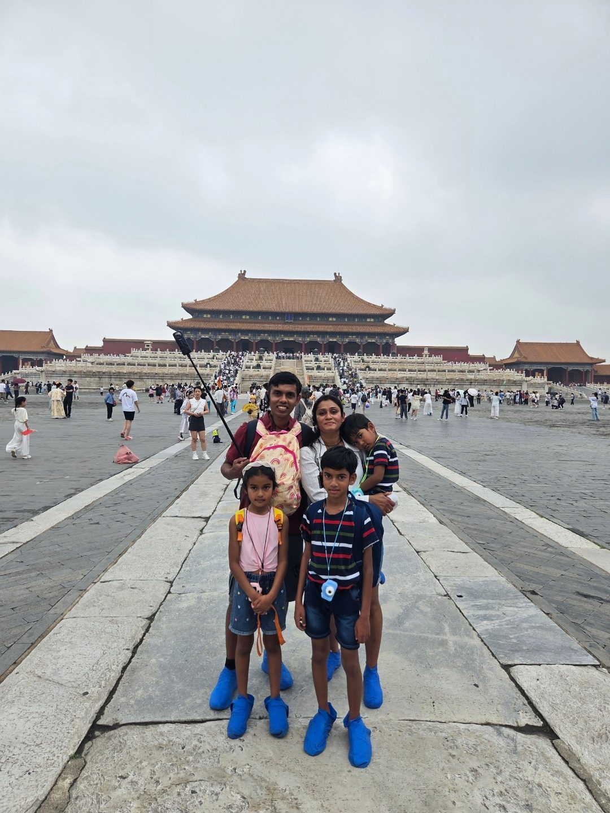

★ Six Centuries of Empire🏯 Forbidden City🧱 The Great Wall
INSIDE: Where 24 emperors ruled for five centuries · the Great Wall at Mutianyu, by cable car and on foot · a four-year-old who walked the whole Forbidden City · and the kindness of a stranger in the Beijing rain
Munasinghe-Fernando Family · Fri 10 Jul + Fri 7 Aug 2026
No. 01 · A Letter from the Road
Who we are, why we travel.

We're the Munasinghe-Fernandos — two parents and three children who love to see the world together. My husband and I share one dream: to travel to as many countries as we possibly can, as a family.
It's never easy — booking flights, trains and rooms for five is its own small adventure, and we know we can't reach everywhere. But from every country we do get to, we try our very best to see as much as we can. This magazine is where we keep all of it.
— The Munasinghe-Fernandos, 2026
The Theme of the Trip · 2026
History & World Heritage
Every year, our family travels to a theme. Last year, all across Japan, it was theme parks — a summer of roller-coasters and cartoon castles. This year we turned the other way, into the deep past: historic cities and UNESCO World Heritage Sites, one country at a time. It began in Beijing, inside the Forbidden City, where we stood among six centuries of imperial halls and began to notice how differently each civilisation builds its palaces, its walls and its churches — a question we carried all the way across Europe.
This issue · China opened the theme — the Forbidden City and the Great Wall, two of the world’s great UNESCO World Heritage Sites.
No. 01 · A Letter from Beijing
Welcome to the Middle Kingdom
Beijing was where our adventure began — and where it ended. Two stopovers, one outbound and one homebound, bracketed an entire summer across Europe. On the way out we touched down at 04:40, watching dawn break over an airport already humming in Mandarin. On the way home we did the same in reverse — same airport, same dry morning air — but a whole summer of memories heavier.
In between those two stopovers lay China's gift to the world: the Forbidden City, six hundred years of imperial power set down in red walls and golden roofs; and the Great Wall, snaking across mountains so impossibly steep we could scarcely believe human hands had built it at all.
This is the first issue of our travel magazine — a record of one family of five, moving through China at high speed, hand in hand, eyes wide, and a thank-you to the country that gave the trip its biggest history lesson and its first great adventure.
In this issue
A Letter from the Road02
Welcome to the Middle Kingdom03
The Journey So Far04
Before We Left · Packing05
Arrival in Beijing06
The Forbidden City07
Inside the Palace08
The Beijing We Moved Through09
The Long Day's End10
The Great Wall at Mutianyu11
The Wider World12
Tastes of Beijing13
Reflections + What's Next14
The Journey · Chapter One
One month. Fifteen countries. It begins here.
Every issue of this magazine is one country — and every country is one chapter of the same journey: one family of five, thirty nights on the road, from the Great Wall of China to the top of Europe and home again.
This is where it starts. We fly out of a New Zealand winter, land in Beijing, and the map unrolls from there — the Alps, the Danube, the canals and cathedrals, all the way to a day inside the world's smallest country — before Beijing catches us one last time on the way home. This page sits at the front of every issue: it will always tell you where we've been, where we are, and where we're headed next.
The Route · 15 Countries · 33 Cities · 30 Nights
01China ★
02Austria
03Czechia
04Hungary
05Slovenia
06Italy
07Switzerland
08Germany
09France
10Netherlands
11Belgium
12Denmark
13Sweden
14Vatican
⌂Home
Today — China: where it all begins. Beijing's Forbidden City on the way out, the Great Wall on the way home.
— Issue 01 · China · The Journey —
Before We Left · The Packing
One month. Three kids. Two seasons in one bag.
This was the biggest journey we had ever attempted — one month, five of us, three of them children — packed in the cracks between work and school runs. On a trip this long there is no room for mistakes; every item had to earn its place. The strangest part of all: we were leaving the middle of a New Zealand winter and landing in the thick of a European summer, so the jumpers stayed home and we packed, instead, for heat we couldn't yet feel.
We packed to a rule — light and simple for every day, but always one sensible backup tucked behind it. Toiletries kept to the essentials (body wash, shampoo, conditioner). When it was finally done, the whole month fit into two large backpacks and four small ones, plus a single hand-luggage bag packed just for the China stopover — and, for four-year-old Avin, a little backpack of his own with a strap for us to hold. A stroller and three folding car seats rounded it out. Backpacks, not suitcases — because three children and cobblestones don't mix with wheels.
01
Two Seasons, One Bag
Two shorts, two dresses and a set of active wear each — plus two spare dresses, for when a dress beats shorts. The boys, Avisha and Avin, in shorts by day with one pair of trousers held in reserve; Aviann in dresses, with hair bands, and oil and gel for their hair.
Summer clothes only
02
Feet & Sun
A pair of shoes and a pair of walking slippers each — hard soles for the sightseeing miles, soft ones for tired feet. Then the sun armour: sunscreen, five pairs of sunglasses, bucket hats, a refillable bottle each, and aloe gel for the evenings.
Sun kit for five
03
The Medicine Bag
Panadol, ibuprofen and cetirizine — every one in both tablets and syrup, so there's a dose for every age. Throat lozenges, Quick-Eze for bloating, nasal spray, plasters and wound cream.
A dose for every age
04
School on the Road
Three weeks out of term, so school came too. A daily journal each; Avisha's two Narnia books and Aviann's Charlotte's Web — their Term 3 reading, read ahead; online homework along the way; and a colouring book and activity book for Avin.
Term 3, in advance
05
Three Little Cameras
One small camera each, from Shein, so all three could shoot their own view of the trip. The hard part was hunting down three 32GB micro-SD cards — the one size the little cameras would take.
3 cameras · 3 photographers
06
The Clever Finds
Three folding car seats from Kmart — 2.5 kg each, lightweight and packable — for comfort over a month of roads. European adapters for every charger. Eye masks with a built-in pillow, so small heads can sleep upright on the long flight. And a stash of home: instant noodles, soup, mac & cheese and 3-in-1 coffee, for the late and hungry arrivals.
2.5 kg car seats · sleep + a taste of home
— Issue 01 · China · Before We Left —
ARRIVAL · BEIJING · 4:30 AM
Rain, no raincoats, and a map that lied.
Our first hour in China was a crash course in how to actually travel here — a WeChat shuttle in the dark, payment apps that had to be juggled, and a taxi ride that took three times longer than Google promised.
China begins the moment you land — and it does not wait for you to catch up. We touched down at half past four in the morning, bleary and wired, three children draped over us like coats. There was one small mercy in the dark: we had packed a single hand-luggage bag for exactly this stopover, so while other families queued at the belts, we walked straight past baggage claim and out into the cool Beijing morning. A message to our hotel over WeChat, and a shuttle appeared to carry us in.
Half past four in the morning, three sleeping children, one bag between us. The China-only carry-on earned its place before the sun was even up.
Then the first plan came undone. Our guide messaged ahead — it's raining at the Forbidden City, bring your raincoats — and ours, of course, were folded neatly inside the main luggage we had just sailed past. So our very first purchase in China was a fistful of cheap ponchos. Paying for them was its own adventure: WeChat Pay refused several of our cards, and we fell back on AliPay, grateful we had deliberately loaded different cards onto different apps before we left. Here cash is nearly extinct; your phone is your wallet, and a backup wallet is not paranoia — it is planning.
The last lesson came on the road. Google Maps promised the collection point was thirty minutes away. Ninety minutes later we were still crawling through Beijing traffic — because Google cannot see China's live congestion at all. It was the Didi app, checked on a hunch, that told us the truth. Rule one, learned before breakfast: in China, trust Didi, not Google. Ponchos on and phones charged, we drove on into the rain — toward six hundred years of emperors.
— Issue 01 · China · Arrival —
FEATURE · THE FORBIDDEN CITY
A walled city, once forbidden.
Six centuries ago the Ming emperor Yongle raised the largest palace on earth at the very centre of Beijing — and forbade the world from setting foot inside it.
Construction began in 1406 under the Yongle Emperor, who had moved the capital from Nanjing to Beijing to anchor his northern empire. More than a million workers — carpenters, stone-cutters, gilders and masons — laboured for fourteen years, and in 1420 the palace stood complete: some 980 buildings across 72 hectares, ringed by a moat fifty-two metres wide and walls ten metres tall.
Its Chinese name, Zijincheng — the "Purple Forbidden City" — was forbidden in earnest. From 1420 until 1912, no commoner could pass its gates without imperial leave; to enter uninvited was to invite death. Behind those vermilion walls lay an entire world: throne halls and gardens, workshops and treasuries, and the vast, silent machinery of the imperial court.
The emperor was the Son of Heaven, and only Heaven was permitted ten thousand rooms — so he stopped at 9,999.
The genius of the place is its geometry. The palace sits astride Beijing's grand north–south axis, aligning the Son of Heaven with the cosmos itself, its great halls all facing south toward his subjects. Twenty-four emperors of the Ming and Qing ruled here until 1912, when the boy-emperor Puyi abdicated and the imperial age ended. What was sealed against the world for five hundred years is now the Palace Museum — open, at last, to the very millions once barred at its gates.
We drove toward those gates through the rain on our first morning in China. For one of us, walking under them at last would be the fulfilment of a dream years in the making.
— Issue 01 · China · The Forbidden City —
INSIDE THE PALACE · IN OUR OWN WORDS
A childhood dream, one room at a time.
Raised on Chinese and Korean historical dramas, walking through the real palace — hall after hall, courtyard after courtyard — was a dream I had carried for years. The rain only made it gentler.
Fri 10 Jul 2026The Forbidden CityEvery room · the whole list
We reached the meeting point four minutes early, and stood in the drizzle while our guide waited another five for the stragglers. Then the gates opened, and everything I had hoped for was on the other side. I grew up on Chinese and Korean historical dramas — on palace intrigues and throne rooms and emperors in silk — and to walk through the real thing, hall after hall, courtyard after courtyard, every room on our list, was a dream years in the making. We saw all of it.
I grew up watching emperors on a screen. Today I walked through their palace, one room at a time.
The weather, oddly, was on our side. Beijing in July can be punishing, but the rain kept the worst of the heat off us — even if, by the end, we were damp with a mix of drizzle and sweat. Our one real mistake was Avin's stroller: we had left it behind, so our four-year-old walked the entire palace on his own small legs. He managed. Barely. So did we.
The adventure came on the way home. We ordered a Didi back to the hotel — but Beijing has a dozen hotels with almost the same name, and the one we tapped was the wrong one. Our driver, who spoke no English, delivered us confidently to the wrong door. What could have been a crisis became the kindest moment of the day: he simply phoned our real hotel, got the address, drove us there himself, and refused a single yuan extra. Not every wrong turn ends badly. Some end in a stranger's quiet kindness.
— Issue 01 · China · Inside the Palace —
BEIJING · THE CITY AROUND THE PALACE
The Beijing we moved through.
Around the Forbidden City stretched the capital itself — its ceremonial gate, its old teahouses, its lantern-strung snack streets. A few frames of the Beijing that framed our day.
Tiananmen — the Gate of Heavenly Peace — hung with its great portrait and flanked by red flags. The ceremonial threshold to the Forbidden City, the vast square opening out in front of it.
Lao She's Teahouse, a Beijing institution named for the great playwright — the kind of old-Peking room where opera and shadow-puppetry still fill the evenings.Wangfujing — the city's most famous snack street, strung with red lanterns and lined with sizzling stalls, where Beijing comes out to eat on its feet.
— Issue 01 · China · The city around us —
BEIJING · THE LONG DAY'S END
A good lunch, a fever, and a 2:50am flight.
The outbound stopover ended the way the best travel days do — with a cheap, delicious meal we stumbled into, a grateful nap, and one small worry we didn't see coming.
Fri 10 – Sat 11 Jul 2026Beijing → the night flightWheels up 02:50
Back at the hotel and finally dry, we did the most ordinary and most rewarding thing a traveller can do: we walked out with no plan and let the neighbourhood decide. A few streets away we found a small restaurant, sat down, and ate one of the best lunches of the day — fresh, generous, and so cheap we checked the bill twice. Then back to the room for a hot bath and a quick, grateful nap.
Our flight out of Beijing left at ten to three in the morning, and the hotel ran its airport shuttle only until half past nine at night. So we set an alarm for half past eight, peeled ourselves off the beds, packed up, and rode out into the dark toward the terminal.
Ten to three in the morning, three children asleep on our shoulders — one of them warmer than he should have been.
It was at the airport that the day turned tender. Avin told me he felt cold, so I pulled a jumper over him. It was only after we cleared security that a health officer approached us gently: the thermal scanners had flagged that our littlest was running a minor fever. That was the chill he had felt. Poor Avin — four years old, halfway around the world, quietly running a temperature and not quite able to say so. We held him a little closer as we boarded, and carried our first small worry up into the night.
A note from further down the road: there was nothing to fear. Avin was simply exhausted. We let him sleep the whole flight and kept the water coming — the Panadol, of course, was packed in the very luggage we had left behind — and by the time we reached Germany, the fever had lifted and our littlest was himself again.
— Issue 01 · China · Departure —
HOMEBOUND · THE GREAT WALL AT MUTIANYU
Stone, soldiers, and smoke signals.
Some twenty-one thousand kilometres of wall, raised and rebuilt by dynasty after dynasty across more than two thousand years. On our very last morning we climbed one restored stretch of it — and felt the weight of all the rest.
Fri 7 Aug 2026Mutianyu Section, HuairouHomeward, by way of the Wall
Mutianyu · the cable car up
The Mutianyu cable car, lifting visitors over the forested ridges to the Wall — the gentler way up, and after a red-eye flight back to Beijing, the one we were grateful to take.
You don't really appreciate the Great Wall from photographs. Photographs flatten it into a ribbon laid neatly across a green landscape. Up close you learn what the camera cannot show: the Wall does not follow the land — it defies it. Where the mountain rises, the Wall rises with it, not at a sensible diagonal but straight up, in staircases steep enough to set you gripping the rail. The sentries who patrolled it did so in armour; the masons who built it dragged their stone up these same slopes. That thought alone changes the way you walk it.
Ours was a homecoming detour. We had flown back into Beijing before dawn on the last leg of the whole trip, and rather than wait out the day at the airport we drove north to Mutianyu and rode the cable car up around mid-morning. From the top the Wall unspools in both directions, tower to watchtower along the spine of the hills, and within minutes the children had stopped asking how far it went and started asking why anyone would ever build something so vast.
The Wall does not follow the mountain. The Wall conquers the mountain. So did the soldiers who stood on it. So did we.
What makes Mutianyu special among the restored sections is how much survives. Rebuilt in brick under the Ming — a hard-wearing step up from the rammed earth of earlier dynasties — its watchtowers still hold their arrow-slits, their smoke-signal platforms, and the little stone chambers where soldiers once slept. You can lay a hand on stone six centuries old and feel its cool; you can stand at an arrow-slit and take in the very view a Ming sentinel once scanned, before turning to light a fire and warn the next tower down the line that something was coming.
— Issue 01 · China · The Great Wall —
THE WIDER WORLD · CHINA AND THE OUTSIDE
The country that closed the door.
For most of history China was the richest, most advanced civilisation on earth. Then, for three centuries, it turned its back on the world — and the world, when it finally forced its way in, found a giant that had fallen behind.
The Wall · from 220 BC
The Great Wall you walked at Mutianyu was China's oldest foreign policy, written in stone — a barrier raised over two thousand years to keep out the horse-nomads of the northern steppe. To stand at an arrow-slit is to stand at the edge of the Chinese world, looking out at the very thing it feared.
The Mongols · 1279
And yet the wall was not enough. In 1279 the Mongols under Kublai Khan swept over it and conquered the whole country — the first time all of China was ruled by outsiders. It was in that open, Mongol century that a young Venetian named Marco Polo reached the emperor's court and carried the legend of Cathay home to Europe.
The closed door · Ming & Qing
Then China turned inward. The Ming banned private sea trade; the Qing squeezed all foreign commerce through a single gate at Canton. Just as Europe's factories and steamships began to multiply, China sealed itself off, sure it needed nothing from anyone. It was this long shutting of the door — our guide told us — that let the West race ahead and left China behind.
The reckoning · 1839–1860
When Britain wanted China's tea and silk and pushed opium in return, and the Qing tried to stop it, the gunboats came. Two Opium Wars shattered the empire, took Hong Kong, and forced the ports open — the start of what China still calls its "Century of Humiliation." The door, shut too long, was now broken off its hinges.
The land that gave the world paper, printing, gunpowder and the compass — and then, for three hundred years, kept them behind a wall.
— Issue 01 · China · The Wider World —
★ TASTES OF BEIJING
The city, on a plate.
Our best meal in Beijing was the simplest of all — a little neighbourhood restaurant near the hotel, stumbled into with no plan and so cheap we checked the bill twice. But these are the flavours the city is famous for: the ones you smell on every corner.
01
Peking Duck 北京烤鸭
Beijing's most famous dish: a whole duck roasted to a lacquered mahogany, the crackling skin carved into mirror-thin slices and rolled into wafer-thin pancakes with cucumber, scallion and a slick of sweet-bean sauce. A recipe perfected in the imperial kitchens.
📍 The dish that defined a dynasty
02
Jianbing 煎饼
The great Beijing breakfast — a thin batter crêpe cracked with an egg, painted with chilli-bean and hoisin, scattered with scallion and a shard of crisp wonton, then folded hot off the griddle and eaten on the move.
📍 Breakfast on the pavement
03
Baozi 包子
Pillowy steamed buns, pleated shut around pork or vegetables and lifted straight from stacked bamboo baskets — the warm, cheap, everywhere comfort food of a Beijing morning.
📍 From every steamer in the city
— Issue 01 · China · Tastes of Beijing —
REFLECTIONS · CHINA
Two stopovers, five childhoods changed.
We had been told China would be a "stopover" — a layover, a bracket around the real trip. That framing turned out to be wrong. Beijing held the trip's biggest history lesson, and the Great Wall its biggest "I cannot believe this is real" moment. If the children remember anything decades from now, it might be this: that the world is impossibly old, that humans have done impossible things, and that you can still climb up onto those things and lay a hand on them and feel that they are real.
What we will carry home: the drum of rain on cheap ponchos in the Forbidden City, the cable car swaying up to the Wall on our very last morning, and the driver who took us to the wrong hotel, then to the right one, and refused a single yuan for the trouble.
Favourite moment
Walking into the Forbidden City at last — the palace I'd only ever seen in the historical dramas I grew up on, suddenly real all around us.
Hardest moment
The fever scare at the airport on the way out — our littlest flagged by the thermal scanner, and the long night flight spent willing his temperature back down.
If we come back…
A whole week — Xi'an's terracotta army, and the Great Wall with no plane to catch.
— Avinesh, Lana, Avisha, Aviann & Avin Munasinghe-Fernando
Beijing · 10 July + 7 August 2026
Munasinghe-Fernando Travel Magazine
No. 01 · Issue One of Fifteen
★ NEXT ISSUE ★
AUSTRIA
Hallstatt's salt mines, the Sound of Music hills, and an emperor's marble city by the Danube.